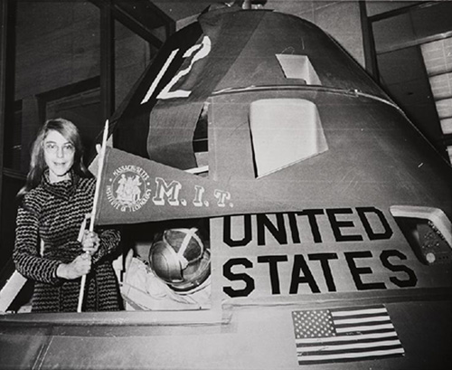

Early life and education
Margaret H. Hamilton was born August 17, 1936, in Paoli, Indiana, to Kenneth Heafield and Ruth Esther Heafield (née Partington). The family later moved to Michigan,where Margaret graduated from Hancock High School in 1954. She studied mathematics at the University of Michigan in 1955 before transferring to Earlham College, where her mother was a student;she earned a BA in mathematics with a minor in philosophy in 1958. She cites Florence Long, the head of the math department at Earlham, as helping with her desire to pursue abstract mathematics and become a mathematics professor.
Career
In Boston, Hamilton initially intended to enroll in graduate study in abstract mathematics at Brandeis However, in mid-1959, Hamilton began working for Edward Norton Lorenz, in the meteorology department at MIT. She developed software for predicting weather, programming on the LGP-30 and the PDP-1 computers at Marvin Minsky's Project MAC. Her work contributed to Lorenz's publications on chaos theory, noting at the time that programmers learned their profession by hands-on training (there were no formal computer science programs at universities yet).
From 1961-63, Hamilton worked on the massive US SAGE air defense system at Lincoln Laboratories, where she first began to take an interest in software reliability. “When the computer crashed during the execution of your program, there was no hiding. Lights would be flashing, bells would be ringing and everyone, the developers and computer operators, would come running to find out whose program was doing something bad to the system”.
During the time of the Apollo space missions, Hamilton led the team that created the on-board flight software for NASA's Apollo command modules and lunar modules. She was in charge of the Apollo (and Skylab) on-board flight software effort while also serving as Director of the Software Engineering Division at MIT's Instrumentation Laboratory. During this time at MIT, she wanted to give their software “legitimacy”, just like with other engineering disciplines, so that it (and those building it) would be given its due respect; and, as a result she made up the term “software engineering” to distinguish it from other kinds of engineering.
With her Priority Displays error detection and recovery programs, she created new manual in the loop concepts that provided the ability for the on-board flight software to communicate asynchronously in real-time with the astronaut within a distributed system of systems environment. This allowed the software (running in parallel with the astronauts) to interrupt the astronauts and replace their normal displays with priority displays; in order to warn them in case of an emergency during an Apollo mission. Such was the case during the Apollo 11 landing.
She culminated the Apollo effort by leading her team in performing an empirical analysis based on lessons learned from the development of the Apollo on-board flight software. These lessons were formalized into a theory for systems and software, which serves as the origin and much of the foundation of Hamilton's Universal Systems Language (USL).
Legacy
Hamilton is the founder and CEO of Hamilton Technologies, Inc. She is responsible for the development of the Universal Systems Language (USL) together with its integrated systems-to-software “Development Before the Fact” preventative life cycle and its automation, the 001 Tool Suite; all based on her mathematical theory of control for systems and software.
When crediting the term "software engineering", Hamilton details on how she came to make up the term:
"When I first came up with the term, no one had heard of it before, at least in our world. It was an ongoing joke for a long time. They liked to kid me about my radical ideas. It was a memorable day when one of the most respected hardware gurus explained to everyone in a meeting that he agreed with me that the process of building software should also be considered an engineering discipline, just like with hardware. Not because of his acceptance of the new 'term' per se, but because we had earned his and the acceptance of the others in the room as being in an engineering field in its own right."
When Hamilton started using the term "software engineering" during the early Apollo missions, software development was not taken seriously compared to other engineering, nor was it regarded as a science. Hamilton was concerned with legitimizing software development as an engineering discipline. Over time the term "software engineering" gained the same respect as any other technical discipline, and even up to over five decades later, Hamilton's methods have had a major impact on the field of software engineering up to and including the present day.
Hamilton received the NASA Exceptional Space Act Award (2003) and the Presidential Medal of Freedom awarded by Barack Obama (2016).

Paoli in Orange County, Indiana
Hamilton with the Apollo 11 Command Module

Hamilton at work

Portrait of Margaret Hamilton

Hamilton stands next to a stack of program listings from the Apollo Guidance Computer, 1969

Hamilton receiving the Presidential Medal of Freedom from Barack Obama in 2016